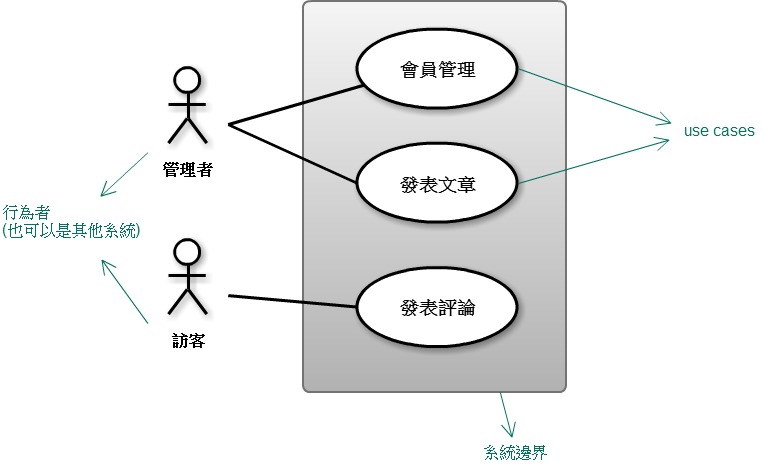
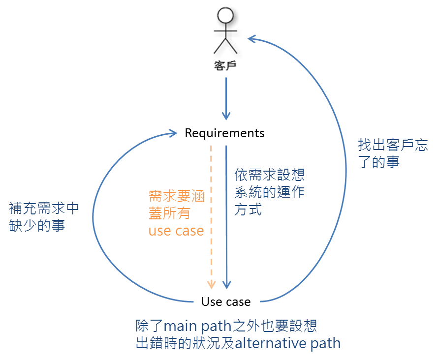

看完《深入淺出物件導向分析與設計》的筆記，這篇概括整理用 OOAD 開發軟體的開發週期，沒有太多細節。
1. 搞清楚客戶想要什麼
跟客戶聊天，從模模糊糊中搞清楚他想要什麼。或者問可以決定要做什麼的人，不管那個人是 PM、PL 還是其他各種頭銜…
利用 Commonality 及 Variability 了解客戶想要什麼、軟體要做什麼。
老實講，我覺得這真是門藝術。
2. 建立 feature list 及 use case diagram
跟客戶聊完天、了解系統要做什麼後建立 feature list，表示整個系統的功能概觀。畫張 use case diagram 呈現使用者或其他系統使用這個系統的藍圖，既然是藍圖，當然不會有太細節的東西啦！feature list 是以功能面的角度看整個系統，use case diagram 則是以「使用」的角度來看整個系統。feature list 裡的功能不管直接或間接，得要能跟 use case diagram 的 use case 互相對應。
Use case diagram example：
到這裡，對整個軟體系統，還只有比較概略性的藍圖，還沒進到 detail，我們要盡可能延後 detail！
Domain Analysis
辨識、收集、組織及表示領域相關資訊的流程，根據既有系統與其開發歷程的研究、領域專家的知識、潛在理論、領域中的新興技術。
是段看不懂在寫什麼的文言文…好吧這種時候我承認原文比較好懂…
在我的理解裡，這部分包含 survey 相關技術，例如 framework 如何使用，包括分析、了解原有架構及既有程式碼、找出相關的物件、物件間關係與互動等等，也包含了解此系統相關的背景知識、相關流程等等，例如要做一個請假系統，得要了解請假流程。
用客戶能理解的語言跟方式描述問題以及系統，不要跟他講什麼 class、variable 就對了。簡單來說──「講人話」。
3. 設計架構
根據 feature list、use case diagram 跟現有程式碼等等資訊將大問題分解成多個各自負責不同功能的 module。組織這些 module 並決定從哪個 module 開始動工。這個階段的重點是建立做事情的順序以及減少風險，更多細節。
如果有需要，套用 design pattern。design pattern 是解決特定問題的方式，能結構化程式，讓程式較易被理解、維護而且更有彈性。
4. 一個個處理小功能
將大問題分成許多小問題之後，準備各個擊破啦！
不同的開發方式：Feature driven & Use case driven development。
4-1. 想小功能的 requirement，建立 requirement list
依照描述的需求建立需求清單。類似 feature list 的概念，只是小一點，著重在要處理的小功能有何需求，會比最開始的 feature 更進入細節事項。
需求不只包含客戶想要的，也包含當事情不按正常狀況來時系統依然要能正常運作。畢竟客戶通常希望當事情不如預期時，系統仍然能正常運作。可以從兩方面著手：
- 這個功能要拿來做什麼、該做什麼？
- 在出錯的情況中，系統要做些什麼事？
4-2. 寫 Use case
requirement 及 use case 要能互相對應，跟 feature 與 use case diagram 一樣。
因為系統是跑在真實世界，不是只跑在預期狀況中，要考慮出錯的狀況。但是呢，有時候系統遇到出錯狀況時「如何反應才是正常」不見得是工程師能決定的，所以，請騷擾請教可以決定這件事的人。
4-3. 設計物件細節及物件間的關係
- 運用 Textual analysis 分析 use case
- Class Diagram
4-4. 實作
運用 OO 原則：
- 操作 interface，而非操作 implementation。
- class 跟行為及功能性有關，有行為才加 class。
- 封裝會改變的東西
- Delegate
- Open Closed Principle（OCP）
- Single Responsibility Principle（SRP）
- Don’t Repeat Yourself（DRY）
- Liskov Substitution Principle（LSP）
5. 測試
測試所有能想到的可能使用狀況跟不按規矩來的使用狀況。
unit test 已經有抽象上的「功能」觀念。unit test 一次只測一個小功能，但測一個小功能不等於測一個 function，也可能是測很多個 function 組合而成的「功能」。
在測試中要模擬 code 真正被使用的狀況跟情境，而不是測試簡單 call function 但實際上並不會這麼使用的狀況。
Murmur
這只是大通則，裡面很多細節是要依照 project 各自狀況不同有所改變的。雖然說是 OOAD 軟體開發週期，但以概念上來說我覺得前面的需求分析等等跟 OO 沒多大關係。
現在理解到程式設計到處都是 divide and conquer，小時候(?)不懂以為 divide and conquer 只存在 algorithm 裡……
最開始我很容易犯的毛病是一下子就想動手寫 code，然後搞得很崩潰，幾次之後就不會想這麼幹了。還有會一下子就掉進細節而且還出不來，難以維持以 big picture 的角度去看，就整個攪再一起，這點現在到底治好了沒我也不太確定…(欸)
雖然目前我只用到裡面的部分方法，但是似乎有個開發週期的框架後變得比較知道自己在幹嘛，腦子比較不會像果醬糊成一團。